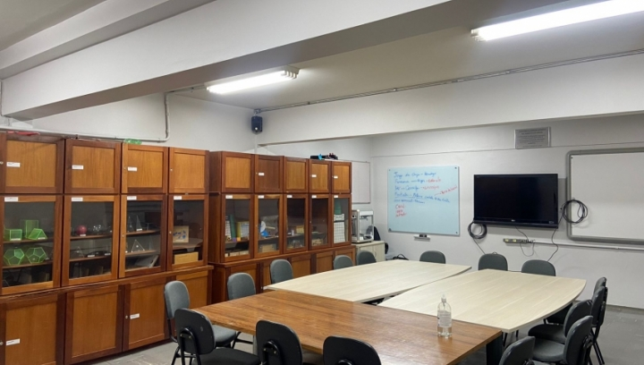

CÓDIGO DA FASE
cola

Aqui no Laboratório de Ensino e Matemática (LEM) você terá aulas de algumas disciplinas, principalmente se você optar por licenciatura, e no final do semestre às vezes tem apresentações de TCC.
Aqui se tem acesso a diversos materiais matemáticos para aprender e ensinar variados tópicos, onde você pode pegá-los emprestados preenchendo uma ficha com um dos voluntários do LEM.
Além disso você pode utilizar a sala em horários disponíveis na porta para estudo e monitoria com ar-condicionado!